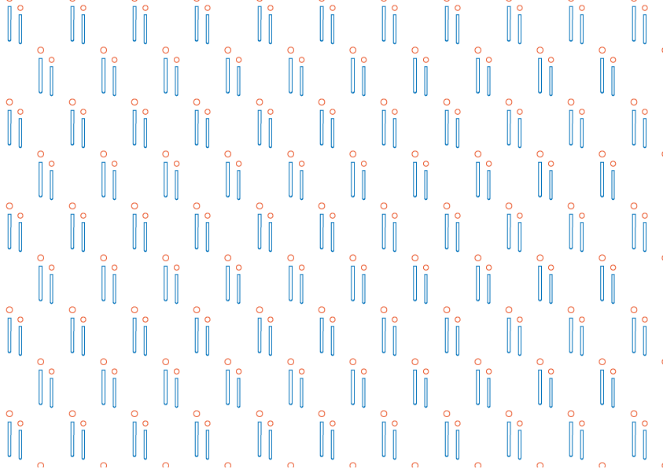
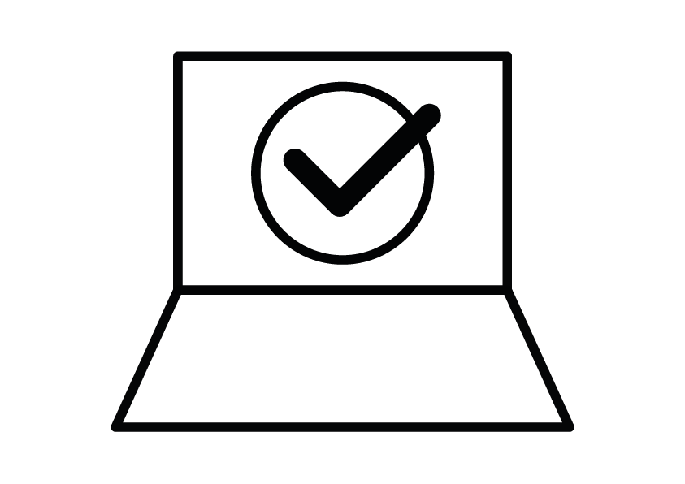
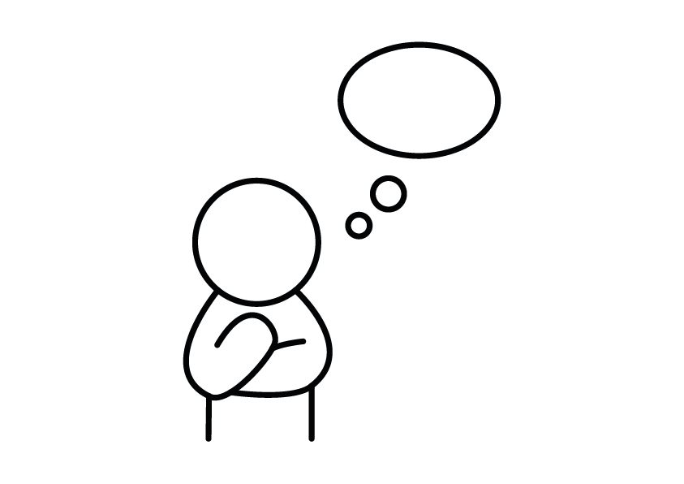
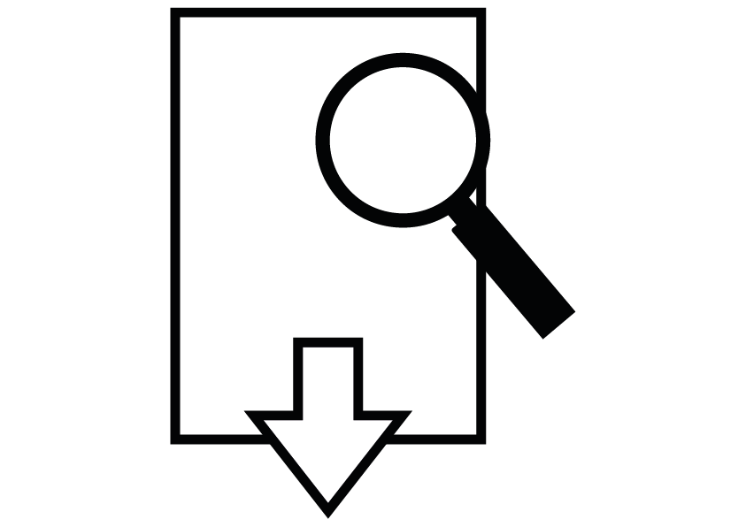

Acesse o teste vocacional pelo site de forma rápida e segura

Vem conhecer a Aluni!
Aluni é um projeto criado por estudantes do IFF de Campos dos Goytacazes, dos cursos de Sistemas de Informação e Design Gráfico, pensado para ajudar quem está terminando o ensino médio e se sente perdido na escolha da faculdade. Sabemos como essa decisão pode ser complicada, por isso desenvolvemos uma ferramenta fácil de usar, que reúne informações sobre todas as instituições públicas da região e os cursos que elas oferecem.
Nosso objetivo é apoiar os estudantes locais, ajudando-os a encontrar o caminho que mais combina com eles. Para facilitar ainda mais, o site conta com um teste vocacional rápido que ajuda a identificar áreas de interesse e sugere cursos com base nas respostas. Com o Aluni, queremos tornar essa fase de escolhas mais leve e acessível para quem sonha em seguir a vida acadêmica!
Você sabe porque é tão importante ir atrás de um diploma?
Ei, respira fundo! Sair do ensino médio pode ser assustador, e tudo bem não ter todas as respostas agora. Buscar um diploma — seja em faculdade, curso técnico ou profissionalizante — é um passo importante para abrir portas e se conhecer melhor. Esse processo traz aprendizados, amadurecimento e novas experiências. Lembre-se: não existe um único caminho certo. O importante é se permitir tentar, errar e aprender. O diploma pode ser um grande aliado na sua jornada, e você é capaz de conquistar isso!
Você conhece as faculdades e cursos de Campos dos Goytacazes?
Por que fazer o teste?
Sair do ensino médio e decidir qual carreira seguir pode ser desafiador, e tudo bem não saber exatamente o que quer! Nosso teste vocacional foi criado para te ajudar nessa fase.
Fazer o teste é super simples! Em poucos minutos, você descobrirá quais áreas são mais adequadas a você e receberá dicas de cursos que podem ser a sua cara.
Faça o teste!1.

2.

Responda às perguntas com atenção. É rápido leve e feito para te ajudar!
3.

Descubra sua área e salve seu resultado!